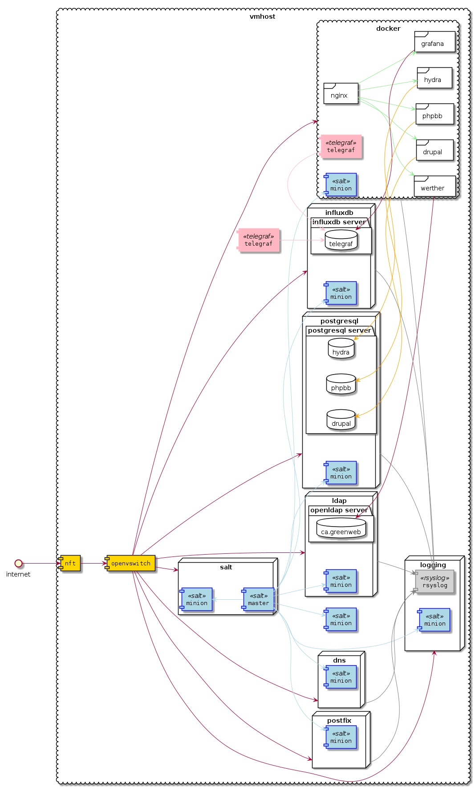

Mile High view of the Greenweb Architecture¶
Out of the box, the GreenWeb provisions a vmhost with infrastructure software, lxc virtual machines and a libvirt virtual machine (docker).
- vmhost
- Contains an openvswitch network bridge and a nft firewall. Serves as a ‘bastion’ server. Also has a salt-minion connected to the salt master. It also has a telegraf agent reporting metrics to influxdb.
- dns
- A lxc virtual machine to host the dnsmasq software and manage DNS names on the openvswitch network.
- salt
- A lxc virtual machine to be a salt master.
- logging
- A lxc virtual machine to host rsyslog and receive logging messages. Unifies logging.
- postgresql
- An lxc virtual machine to host postgresql database. It contains database for orm-hydra, phpbb and drupal.
- influxdb
- An lxc virtual machine to host influxdb database.
- ldap
- An lxc virtual machine to host the ldap database.
- postfix
- An lxc virtual machine to serve as email infrastructure. It contains postfix and dovecot. It is integrated into ldap.
- docker
A libvirt virtual machine (i.e. more isolated) that runs most of the front end services:
- hydra:
- orm-hydra provides oauth2 support for drupal, phpbb and grafana.
- werther:
- A login manager, integrated into hydra and ldap.
- grafana:
- A data visualization package, integrates with influxdb.
- phpbb:
- Web forum software, relies on a postgresql database and postfix emailing infrastructure.
- drupal:
- Web site software, relies on a postgresql database and postfix emailing infrastructure.

Mile High Green Web Architecture Diagram¶